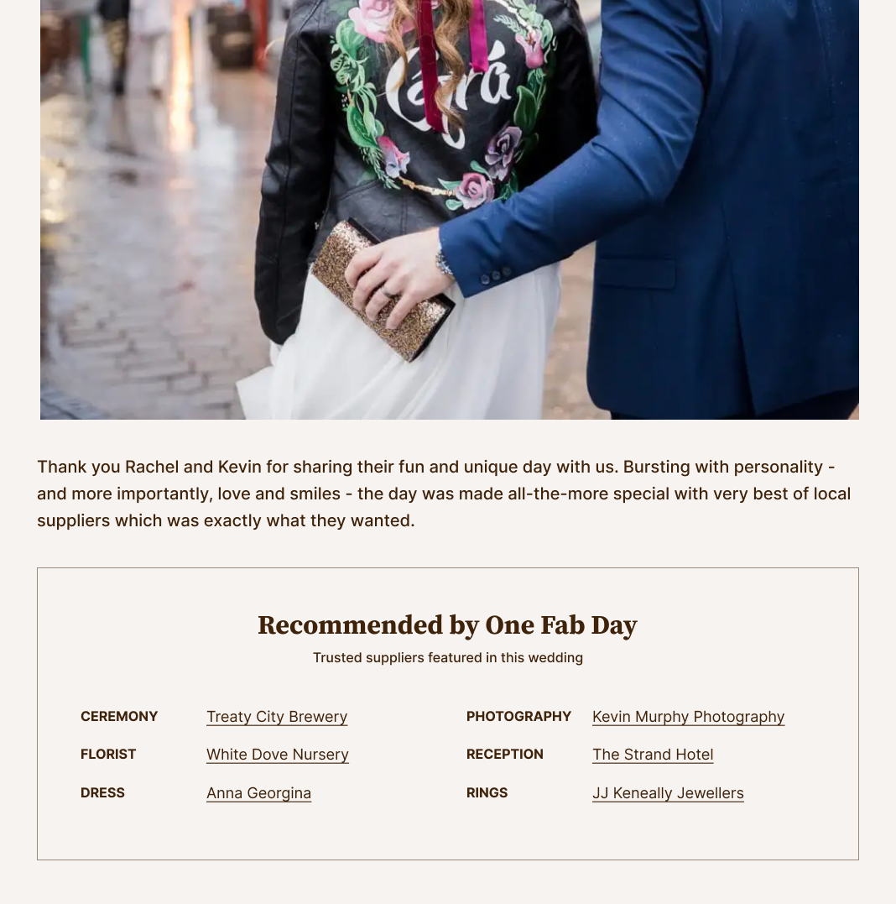
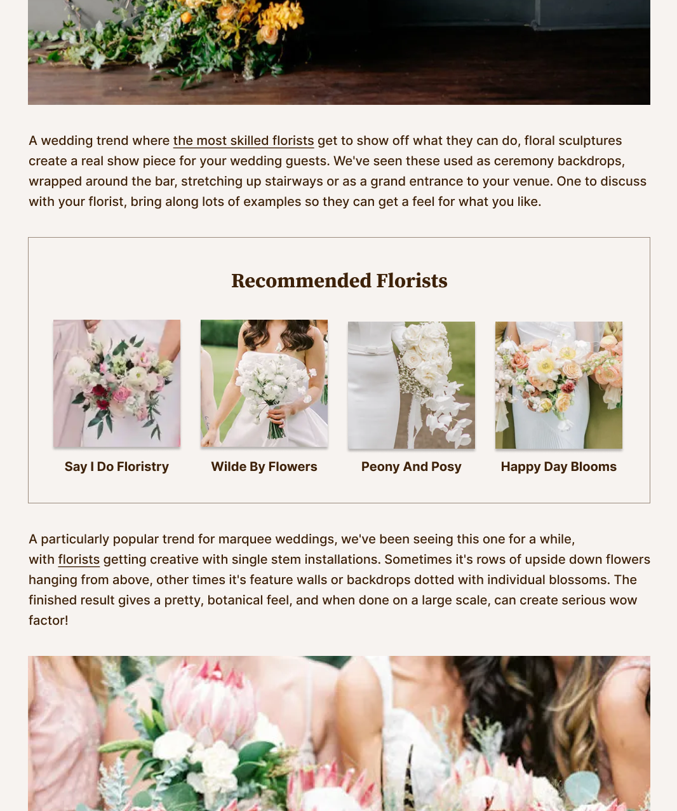
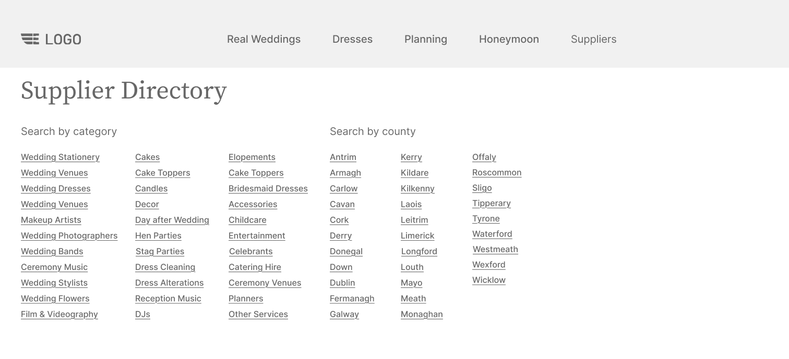
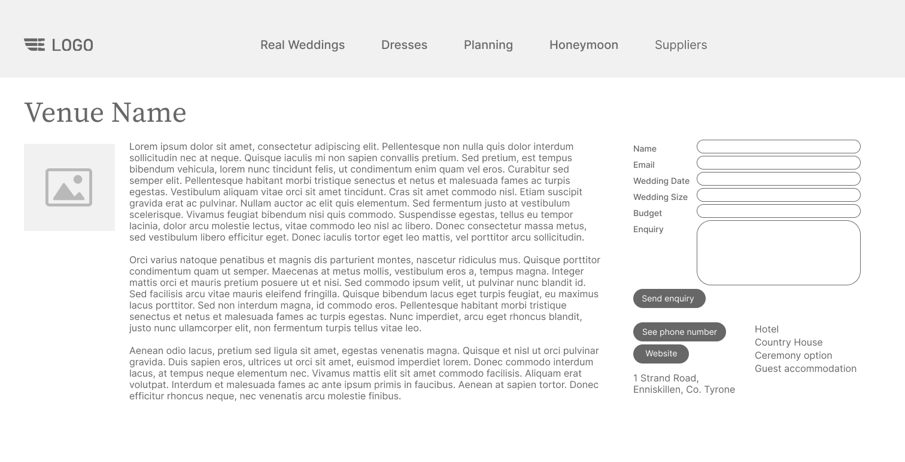
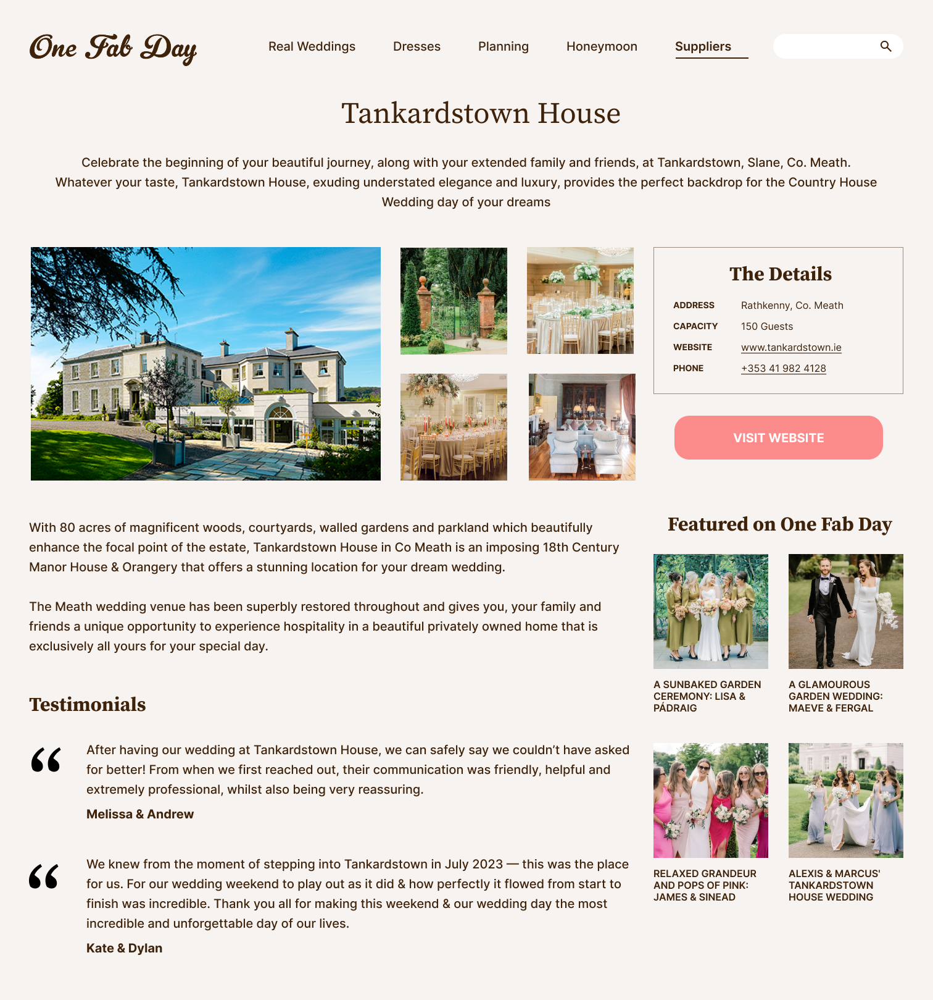

One Fab Day: Evolving a content-led platform from inspiration to action
One Fab Day combined high-traffic wedding editorial with a curated supplier directory. Traffic and
brand trust were strong but the pathway from inspiration to supplier action was weak.
As Product and UX Designer, I led on phased improvements across UX, content modelling and
internal workflows to turn editorial engagement into measurable supplier actions.
Supplier outbound clicks from editorial and directory increased 3x. Renewals went above 85%
year-on-year. Approval cycle time fell ~50% from submission to publish.
Editorial content attracted high-intent traffic, but very little of that intent translated into
supplier discovery. The commercial engine of the business, the invite-only supplier directory,
operated independently from the content driving engagement. The product wasn't underperforming,
but the parts that built trust weren't the parts that made money. We needed a clearer way to
connect the two.
Search Social Direct
High Traffic
→
Editorial Content
Low Discovery
→
Supplier Directory
Structural Tension
Editorial built trust. The directory paid the bills.
Editorial content drove strong organic traffic and engagement
The invite-only supplier directory was the core commercial product
These two parts of the site operated largely independently
The Deeper Issue
Product lacked strategy to connect inspiration to action.
Supplier pages were difficult to find and hard to differentiate
Calls-to-action were unclear and attribution was weak
This was not a single research sprint. We used behavioural data, commercial feedback and
operational signals to decide what to tackle first. This evidence pushed us towards an approach
that joined editorial and directory experiences rather than treating the directory as a separate
product.
Behavioural signals
Outbound click tracking from editorial and directory pages to supplier websites
Navigation and category engagement data that showed weak discovery pathways
Returning visitor patterns across multiple sessions
Session-level clustering of outbound supplier clicks
Commercial and operational signals
Editorial features were highly valued for both their prestige and conversion.
Recurring supplier questions in renewal conversations about visibility and attribution
Approval bottlenecks and status confusion visible in Salesforce workflows
Inconsistent image and profile quality creating review overhead
What we learned
Across data, supplier conversations and workflow friction three patterns became clear.
Pattern 1: Browsing and decision happen in different modes
Returning visitors spent time consuming editorial content across multiple sessions.
We added supplier modules inside editorial to catch people during browsing, then
simplified directory and profile pages to support fast scanning and a single next step.
Pattern 2: Trust is visual before it is rational
Supplier choice started with imagery before users read detailed descriptions.
Inconsistent presentation reduced confidence and comparability.
Directory and profiles needed stronger visual hierarchy and standardisation.
Pattern 3: Value must be visible and attributable
Suppliers cared about measurable visibility and referral quality.
Weak linking and unclear attribution undermined renewal conversations.
Editorial integration and clearer outbound actions were commercially critical.
Goal
Create a bridge from editorial engagement to curated supplier discovery, increasing
meaningful, attributable actions while protecting brand trust.
Platform & workflow foundations
The UX changes sat on top of an existing platform: custom WordPress for publishing, Salesforce
for partner tracking and Trello for editorial planning. Because supplier discovery relied on
accurate linking and consistent profiles, we tightened the content and approval workflow so the
front end could stay curated at scale.
System view (tools + handoffs)
Trello
Editorial calendar of mostly evergreen features
→
WordPress (custom)
Publishing: editorial + supplier profiles
↔
Salesforce
Editorial submissions + partner tracking
The UX needed to fit real team workflows across Trello, WordPress and Salesforce,
not just the front-end experience.
Core content model
Editorial articles
Many categories
links to
Supplier Profiles
Directory listings
plus
Sponsored Editorial
Featuring partners
Linking logic (practical + explicit):
Editorial pages linked out to supplier websites.
Supplier profiles showed a list of related editorial features (by ID).
Metadata (category, location etc.) supported browsing and curation.
Restructuring Salesforce tracking reduced approval time by 50%.
Solution phase 1: Improve supplier visibility at moments of intent
Discovery relied on proactive search which is unlikely at scale. Phase 1 focused on creating
intentional pathways from inspiration to suppliers.
Decision 1: Reframe the directory as a curated product
The supplier directory was the commercial engine, but it felt like a generic listings area. I
renamed it to “The Wedding Book”, reworked the IA into clearer categories and
surfaced it in primary navigation. This then felt like a curated destination - a "little black
book" rather than a listings database.
Impact:
Stronger trust signals for users and clearer positioning of the paid product for suppliers
Increased supplier discovery driven by navigation, not just search
Decision 2: Make it easier to discover suppliers directly within editorial

Supplier links in real wedding features

Recommended suppliers in editorial content
Editorial was where users spent most time, but supplier discovery depended on proactive
searching. I added contextual supplier modules inside Real Weddings and other editorial
features. These image-led placements matched the editorial feel.
Impact:
Shifted discovery from proactive search to contextual exposure
Increased supplier exploration without disrupting the editorial experience
Decision 3: Align commercial formats with editorial standards
Paid placements risked undermining trust if they didn't match editorial tone. I introduced
Sponsor Spotlight as a new format and kept the same visual and writing
standards as organic editorial, while clearly branded as commercial content.
Impact:
Protected editorial trust while improving clarity for partners
Increased confidence in and value of paid placements
Solution phase 2: Make supplier discovery visual, comparable and decision-oriented
With pathways in place, the directory needed to support fast evaluation and confident
shortlisting. I shifted it from text-heavy lists to a visual browsing experience.
Decision 1: Shift discovery from text-first to image-led

Typical directory layoutImage first layout
Supplier choice started visually, but the old text-heavy layout slowed scanning and reduced
differentiation. I redesigned category pages to be image-led, using real-work
photography and structure that supported quick scanning before deeper reads.
Impact:
Faster orientation and stronger differentiation between suppliers
A more "editorial" entry point into supplier research
Decision 2: Standardise supplier profiles for confident comparison
Inconsistent layouts made comparison and shortlisting harder than it needed to be. I
standardised supplier cards across categories and balanced imagery, key metadata and
descriptions for quick comparison.
Impact:
Reduced cognitive load and supported more confident shortlisting
Decision 3: Use hierarchy to guide attention
As the directory became more visual, hierarchy mattered more. I used spacing, grouping and scale
to keep pages calm and scannable, prioritising exploration over completeness.
Impact:
Encouraged deeper browsing without increasing friction
Solution phase 3: Strengthen supplier profiles and clarify the primary action
The final challenge was the moment of commitment. Supplier profiles needed to build trust
quickly and guide users toward a single, high-value action.
Decision 1: Lead with visual proof

Typical supplier listing page

Vetted images of real work
Trust was established through real work. I expanded curated galleries to editorial standards,
prioritised real wedding imagery featuring the supplier and surfaced relevant editorial features
on the profile.
Impact:
Faster trust-building and stronger perceived curation standards
Decision 2: Make credibility explicit
Trust signals existed, but weren't explicit at decision time. I added vetted testimonials and an
impactful “Featured on One Fab Day” indicator to reduce hesitation.
Impact:
Clearer credibility cues at the point of decision
Decision 3: Clarify the primary action
Multiple CTAs diluted attention and muddied attribution. I removed the low-use enquiry form and
made Visit Website the dominant action. This aligned the primary user goal with
the primary commercial metric.
Trade-off: We accepted fewer in-platform enquiries to get cleaner attribution
and higher-value partner traffic.
Impact:
More supplier website visits and cleaner partner reporting at renewal time
Results
Across the three phases, supplier discovery shifted from incidental exposure to a guided path
with trust-led engagement.
User & Behaviour Impact
Supplier click-through rates tripled after structured editorial linking
and profile redesign.
Clearer progression from inspiration to evaluation and action.
Stronger engagement with image-led directory categories and supplier galleries.